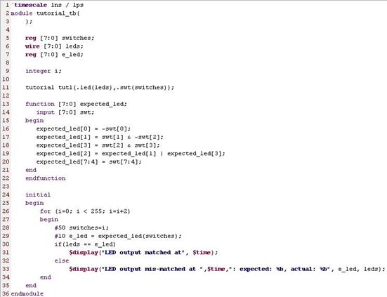
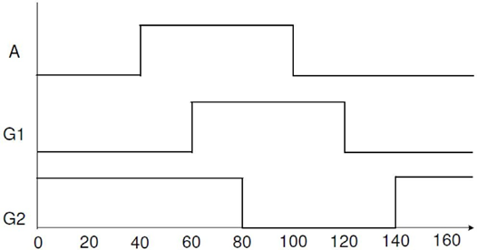

Testbench 的编写与应用
1. Testbench 的概念
Testbench 是一种用任意语言编写的程序或模块，用于在模拟过程中执行和验证硬件模型的功能正确性。Verilog 主要用于硬件建模（模拟），该语言包含各种资源，用于格式化，读取，存储，动态分配，比较和写入模拟数据，包括输入激励和输出结果。
2. Testbench 的组成组件
Testbench 的主要组件如下：
-
时间表声明：指定所有延迟的时间单位
-
Module：它定义了测试文件的 top 模块，测试文件的 top 模块通常没有输入输出端口，测试是直接监控寄存器和线网这些内部信号的活动
-
内部信号：它将驱动激励信号进入 UUT 并监控 UUT 的响应，信号驱动和监控
-
UUT 实例化
-
激励生成：编写语句以创建激励和程序块
-
响应监控和比较：自我测试语句，能报告数值，错误和警告
下面，具体展开这其中的一些组件如何实现。其余组件参照使用 Testbench 的一个例子。
2-1. Testbench 的延迟建模
Verilog 支持两种类型的延迟建模：（i）惯性和（ii）传输。惯性延迟是门（gate）或电路由于其物理特性而可能经历的延迟。根据所使用的技术，它可以是 ps 或 ns。惯性延迟还用于确定输入是否对门或电路有影响。如果输入至少在初始延迟时没有保持变化，则忽略输入变化。例如，5 ns 的惯性延迟意味着无论何时输入发生变化，它都应保持至少 5 ns 的变化，以使其被视为已更改，否则将忽略该变化（被视为噪声尖峰）。 传输延迟是传输电路导线的信号的飞行时间。以下是运输和惯性延迟的示例：
wire #2 a_long_wire; // 运输延迟两单元时间
xor #1 M1(sum, a, b); // 惯性延迟1单元时间
2-2. Testbench 中的初始语句
初始语句在 testbenchs 中用于生成激励和控制仿真执行。参照下面的一个例子：
initial begin
#100 $finish; // run simulation for 100 units
end
initial begin
#10 a=0; b=0; // a, b zero after 10 units delay. Between 0 and 10,
// it is x
#10 b=1; // At 20, make b=1
#10 a=1; // at 30, make a=1
#10 b=0; // at 40, make b=0
end
下面是生成称为时钟的周期信号的初始语句用法的另一个示例。它将产生 50％占空比的时钟信号，周期为 20 个单位。
reg clock;
parameter half_cycle = 10;
initial begin
clock = 0;
forever begin
#half_cycle clock = 1;
#half_cycle clock = 0;
end
end
3. 使用 Testbench 的一个例子

第 1 行定义了`timescale 指令。
第 2 行和第 3 行定义了测试平台模块名称。请注意，通常，testbench 模块的端口列表中不列出端口。
第 5 行将拨动开关定义为 reg 数据类型，因为它将用于提供激励。它连接到被测试（tutorial）的实例化设备。
第 11 行使用实例名称 tut1 和输入/输出端口实例化测试（tutorial）中的设计。
第 13 行到第 22 行定义了计算预期输出的 function。
第 24 至 35 行使用 initial 过程描述来定义激励。可以在仿真器控制台窗口中使用 system task $ display 来查看第 31 行和第 33 行生成的消息。
第 29 行通过传递开关参数调用函数 expected_led，并将返回的（计算过的）输出分配给 e_led。e_led 在第 7 行定义为 reg 类型，因为它在过程语句（初始）中接收函数调用的输出。
第 28 和 29 行还分别定义惯性延迟 50 和 10，以模拟延迟。
4. 开发一个生成特定波形的 Testbench
开发一个 testbench，生成如下所示的波形。

实验步骤
-
打开 Vivado 并创建一个名为 Testbench 的空白项目。
-
创建并添加输出上面显示的波形的 Verilog 模块。
-
将设计模拟 150 ns 并验证是否生成了正确的输出。
参考代码
module Testbench();
reg A,G1,G2;
initial begin
A = 0;
G1 = 0;
G2 = 1;
#40 A = 1;
#20 G1 = 1;
#20 G2 = 0;
#20 A = 0;
#20 G1 = 0;
#20 G2 = 1;
end
endmodule